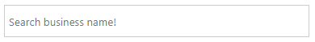
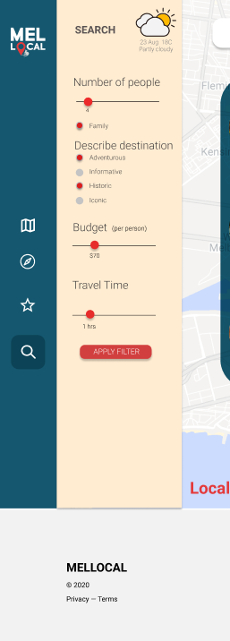
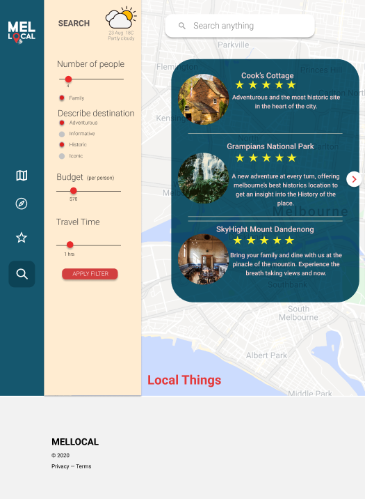
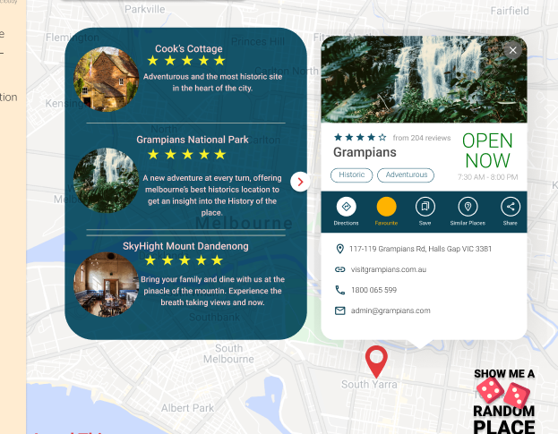

The website can filter the available tourist locations and destination with the filters provided by the user. The closest best available options are shown first which then on to the other ones. It shows the locations with its location and with other contact details. The Search function also allows the user to add the places to favourite and then access it from there later. The search function comes with different types of filters. It also comes with a special feature for families. Selected the family box, lists all the family friendly destinations around them within the given budget. The search can be further filtered by users by, using the Budget and the Travel time feature. These allow the user to narrow down their search to find the best available option closest to them.
1. Display Information Widget with all the search reults that meets the users needs.

Consistency and Standards:
The layout allows the user to view a list of all the search results and these results can be opened up one by one to show the details to each.
Flexibility and Efficency of Use:
The users can add or remove any filter at any time. Pressing the apply filter button will show all the available locations, that meets the search Criteria.
User Control and Freedom:
The user can also add or remove any place to the favourite tab. This allows the user to pick and chose and organise their day.
Visibility of System Satus
]When adding a destination to the favourite tab,
1. Filter Search Tab, that allows the user to enter their requirements.

Consistency and Standards:
The filter search has 4 different options. Number of people, Description of destination, Budget and Travel Time. All these features have either radio buttons to select or has a consistant slide, to chose precise values.
Flexibility and Efficency of Use:
The slide bars allows the user to chose a precise valid value, which makes the results effecient. They also have the flexibility to chose different options to get the destination they are looking for.
User Control and Freedom:
The user can always go back and change the selected filter and press Apply filter to get the results they want.
Visibility of System Satus
The filters stay on as long as they don't change to another page. This allows the user to justify the search results.
2. Display Search results after entering the filter values.

Consistency and Standards:
All the results show up in a table format with 3 rows. Each row consists of a picture of the destination along with its rating and a short description.
Flexibility and Efficency of Use:
The user can then manually click and select the destination that looks more interesting to them and add them to the favourites or to research more about them.
Visibility of System Satus
The user can scroll through the provided results and pick and chose the one that interests them the most. The small arrow at the bottom denotes that there is more content/ search results available which can be accessed when scrolled.
3. Display the selected destination

Consistency and Standards:
The seperate tab that opens up has information about the selected destination from the list. The selected tab consists of the add to fav button with directions and other contact details.
Flexibility and Efficency of Use:
They can close the opened window with the cross button at the top right corner. Adding and removing the destination from the favourite bar can also be done from here.
Visibility of System Satus
The star when coloured in indicates that the destination has been added to the favourite tab, when empty and white denotes that it has not been added to the favourites tabe.
An arrow is also placed next to the selected destination from the list to show, which destinations information is being displayed.
Aesthetic and Minimalist Design
The aesthetics of this have been kept to a bare minimum, for ease of understanding and navigation. The background blue has been made transparent to show the location of the map behind.
Visibility of System Satus